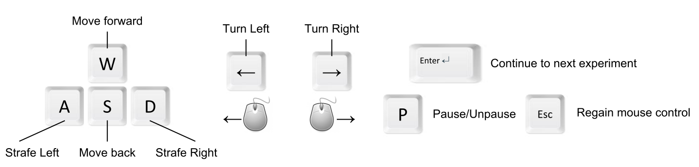

Instructions
Please read the instructions thoroughly before proceeding.
Experiment Server
-
The experiment server can only support 1 person at a time.
-
It may take up to 15-20 minutes to complete the entire set of
experiments, so make sure you have enough time to proceed.
-
To start the experiment, enter your name and email address and lock the
server below.
-
Once you acquire a lock on the server, spend some time to read the instructions below thoroughly. After reading the instructions, hit the continue button at the bottom of the page to proceed.
Experiment Goal
-
In these experiments, you'll be controlling a simulated person to find a
red ball. Your goal will be to find the ball as quickly as possible.
-
Once you find the ball, run (crash) into it to proceed to the next experiment.
-
At the end of each experiment, you will receive a score based on how fast
you were able to locate the ball. Your score for that experiment will be
added to your total.
-
We'll begin with 2 tutorials to get you acquainted with the controls.
After that we'll proceed with 5 actual experiments.
Assistance through Robots
-
Some robots in the environment will try and help you
reach the destination. These robots are pictured below:

-
The robots will always try and do their best to direct you along the
correct path to the goal. However, there might not be enough robots
available in an experiment to make the path to the goal easy to follow.
-
When you approach a robot, an arrow will pop up pointing you in the
right direction. If an arrow does not pop up, it means the robot is
there performing some other task, and you should ignore that robot.
Controls

Using the mouse to look
-
You can use the mouse to look around if your browser supports it. Hit the
"Use Mouse!" button when you enter the experiment.
-
Hitting the Esc key will give control of the mouse back to you.